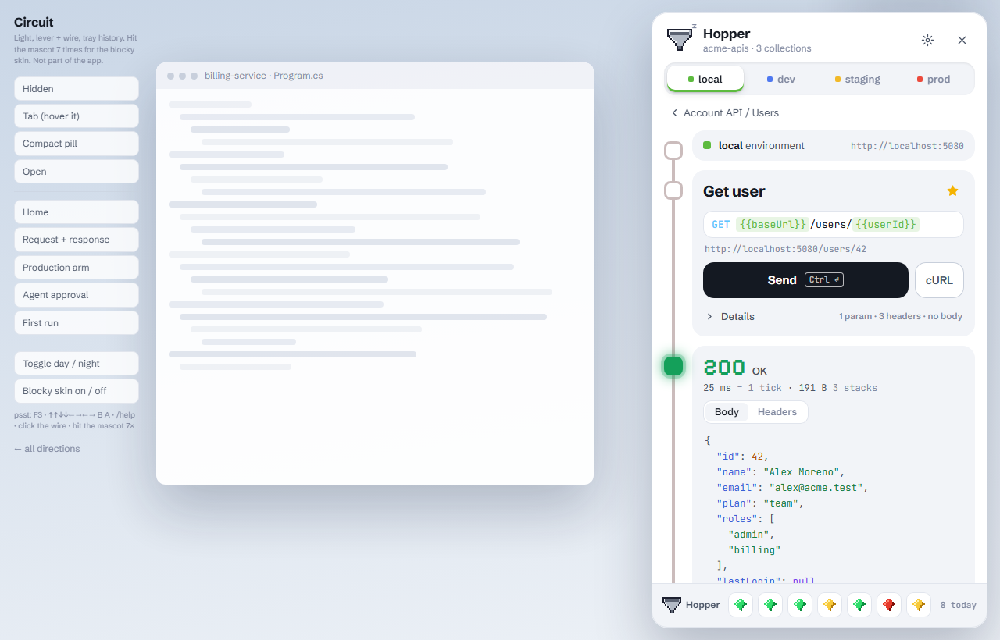
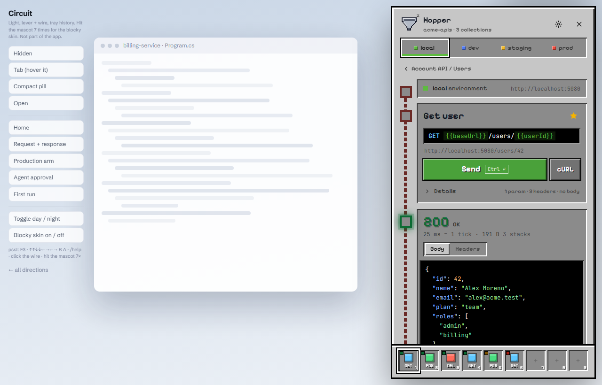

Hopper, redesigned
Circuit is the chosen direction; the blocky Minecraft skin is hidden inside it. Both are interactive HTML mockups: open one, press Ctrl Alt H, type in the search box, send a request. The controls on the left of each page jump between states. Neither touches the real app yet.

Circuit chosen
Light, calm, mouse friendly. The environment is a lever that is always in view. A redstone wire runs from environment to request to response and lights while a request is in flight. History is the tray of items your hopper has collected.

Circuit, blocky skin easter egg
Hit the mascot seven times (or type /resourcepack blocky). A dirt-screen wipe loads the pack: inventory bevels, black text fields, stepped redstone wire, and a nine-slot hotbar replaces the tray. Seven more clicks switch back.
The earlier standalone Hotbar direction is kept for reference; its pieces now live inside the blocky skin.
How Circuit and the old Hotbar direction compare
| Hotbar (reference) | Circuit (chosen) | |
|---|---|---|
| Home | Search, then recent list | Search, then pinned lamps, then recent |
| Pinning | Slots 1-9, always visible, number keys send | Lamp tiles on home; each bulb shows the last result |
| Environment | Pill in the header, menu, full sheet for secrets | Four-notch lever under the header, one tap, always visible |
| Production guard | Hold Send; the button cracks like a block and breaks | Flip the Arm switch (expires in 5 s), then Send |
| Agent approval | Modal trade. Arrow fills for 1.1 s before buttons unlock | Non-modal tray that slides up. Redstone dust lights across before unlock |
| History | Recent list on home | Item tray in the footer, newest drops in at the left |
| Feel | Pixel-notched, inventory slots, stepped bevels | Soft cards, big radii, glowing lamps |
UX changes in both
- One orchestrated entrance. The panel springs in from its edge and its contents stagger up once per open. Nothing else animates unprompted except the mascot.
- Search collapses when you open a request, giving the response the space. Esc or / brings it back.
- Request details are folded. You see param, header and body counts; open them only when needed.
- Variables show their value on hover and take the environment colour, so you can see where a request will go.
- Click any response value to copy it.
- Errors give a next step. 404 shows the server's hint, 500 offers Copy trace id, 402 and 418 explain themselves.
- OpenAPI routes appear in search with a one-click Save, so finding a route and saving it is one motion.
- Production is never subtle. The panel frame turns red, and writes need a deliberate gesture.
- Approvals can't be hit by accident. Buttons start disabled, Esc shakes the dialog instead of closing it.
- Secrets show only set or missing, drawn as enchanting-table glyphs.
Minecraft easter eggs (spoilers)
- Time is also shown in ticks (50 ms) and size in stacks (64 bytes), next to the real units.
- A creeper hisses over the mascot on a 5xx; the funnel returns afterwards.
- The mascot is a pixel hopper. It sleeps, jiggles while sending, and shows a ! for approvals. Click it five times.
- Agent approvals are a villager trade; blocking one makes it shake its head.
- Slash commands in the search box:
/time set day(light theme),/weather rain,/give diamond,/gamemode creative(A),/kill,/seed,/help. Paths such as/usersstill search normally. - F3 opens a debug overlay (fps, ticks, panel size, MCP port, secrets in frontend: 0).
- Seven mascot clicks load the blocky resource pack (dirt wipe, hotbar, 1-9 fire pinned requests).
/resourcepack blockydoes the same. - The Konami code rains gems. A clickable redstone wire is in there too.
- Empty search: Not even a block of dirt. First run has a rotating splash text.
All art is drawn from scratch as small pixel grids in shared.js; no Mojang textures, fonts or sounds, in line with the plan's note that Hopper's mascot is original. The mockups respect prefers-reduced-motion, keep a visible focus ring, and add ?still to the URL to freeze animations for screenshots.